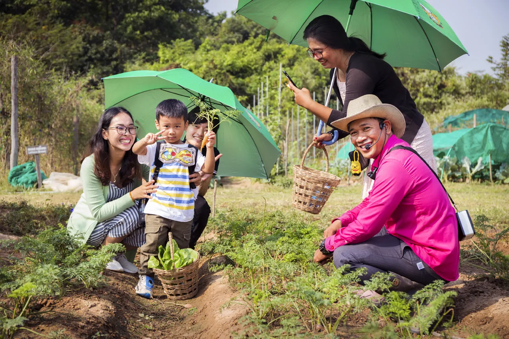
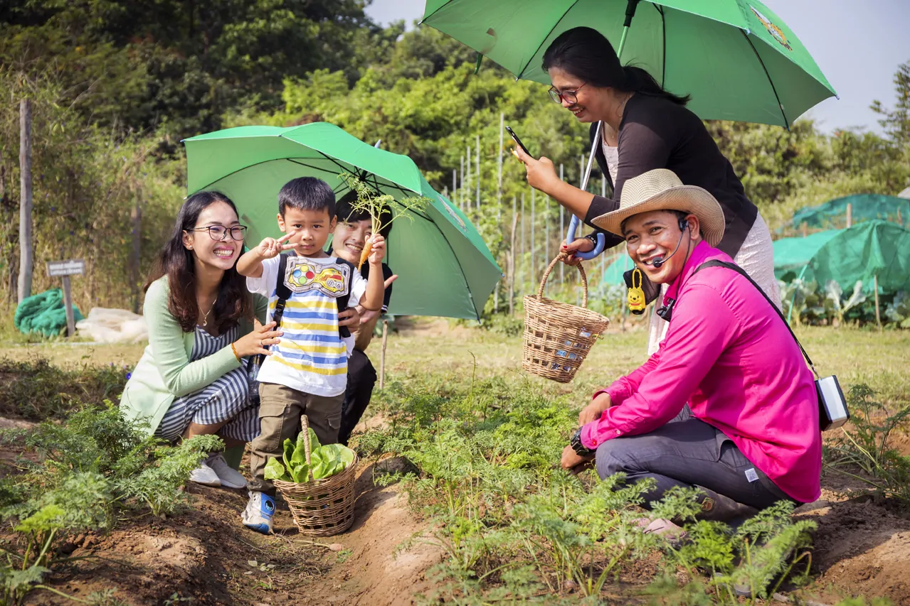
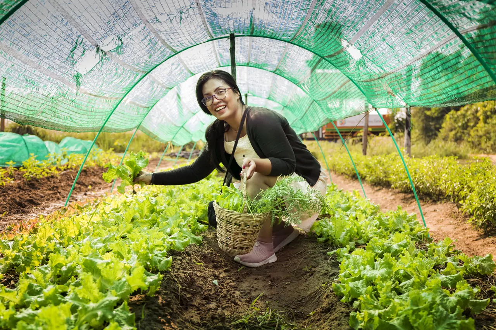
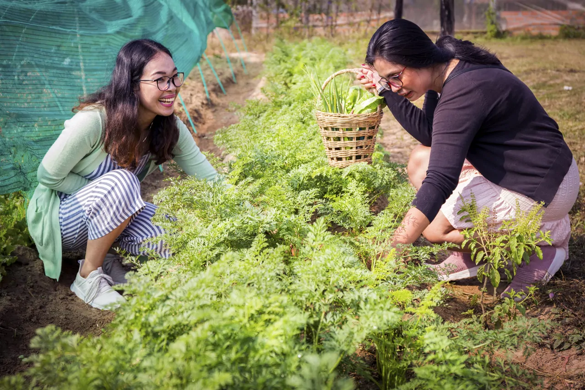
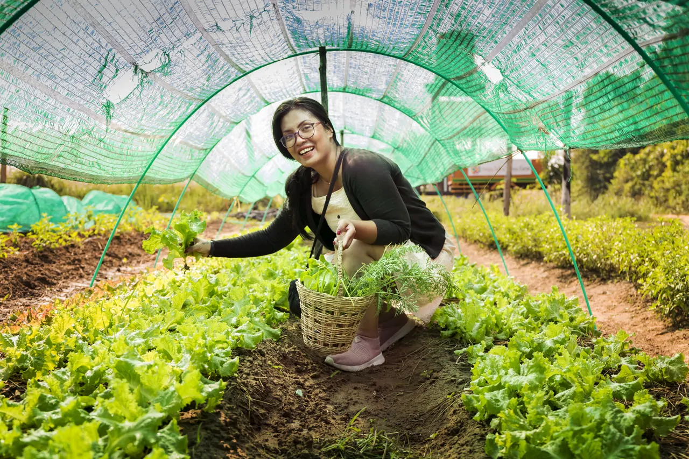
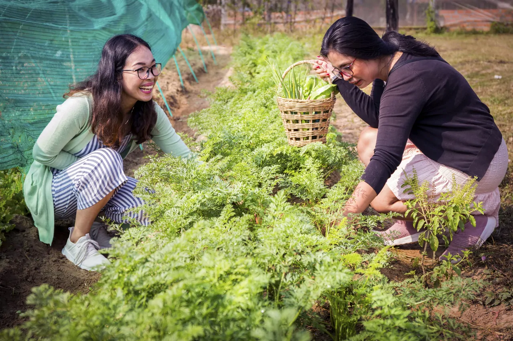
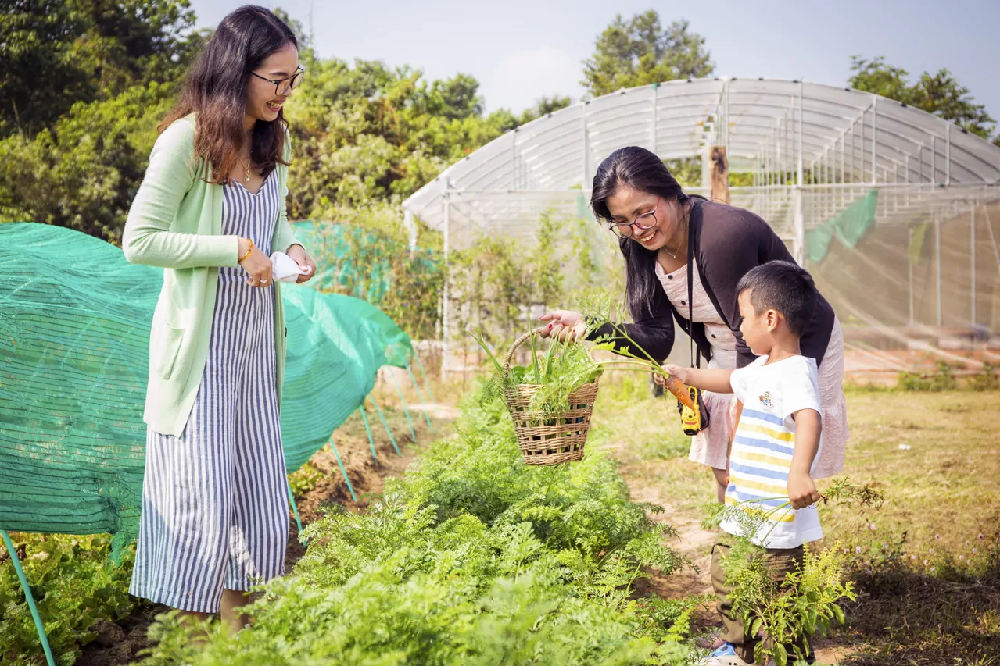
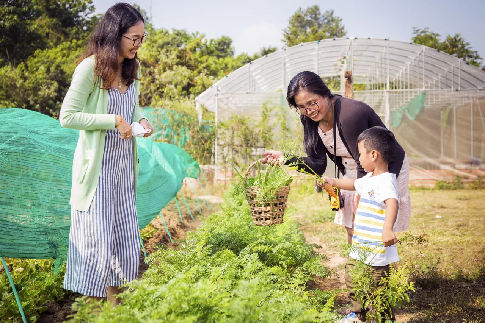

Organic Farm Tour
In 2018, after 5 years of experimentation, Svay Chek has started giving
visitors the great opportunity to spend half a day in the core of its activities. Indeed, we
have opened our farm for visits in order to show our guests how organic farming really happens.
We are very happy and proud to guide our visitors during this discovery offering a glimpse of
the diversity of local organic agriculture on our land. Our farmers are pleased to share their
farming knowledge and the day to day operation and challenges of farming organically.
Tour Highlights
Discover
Learn about our philosophy & vision for the Channak Organic Farm and local community living in the area.
Explore
Understand how our farm creates the products we sell to the Tboung Khmum community in our organic farm shop.
Harvest
See how we grow and harvest our organic fruit and vegetables using only sustainable techniques.
Taste
Eat our locally grown, pesticide-free and eco-friendly fruits and vegetables grown in our farm.


 

 




 
